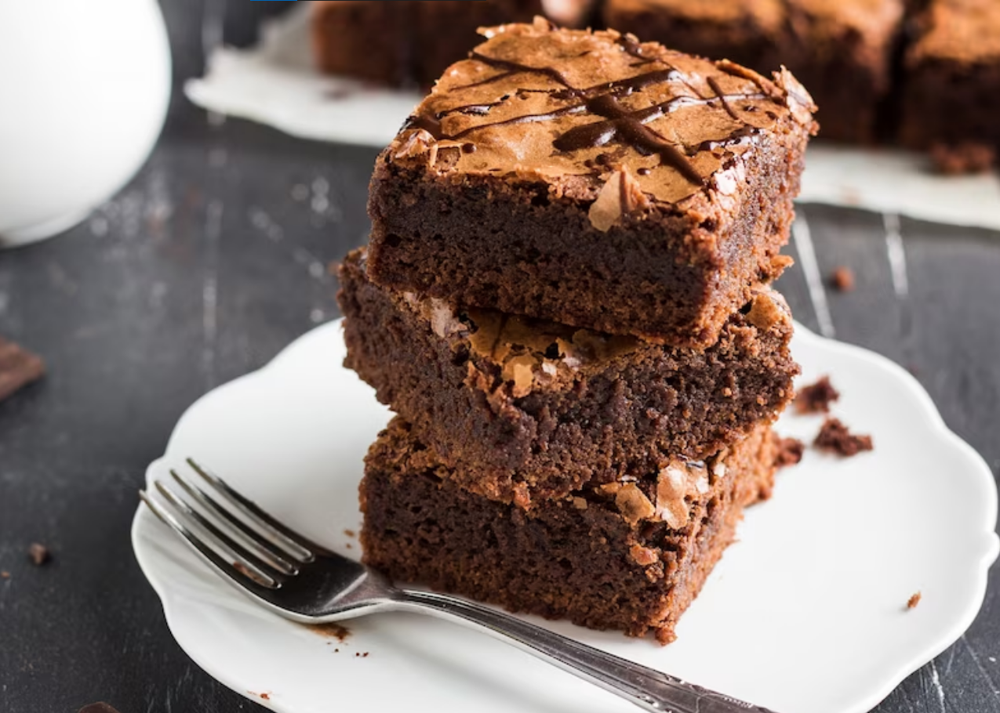
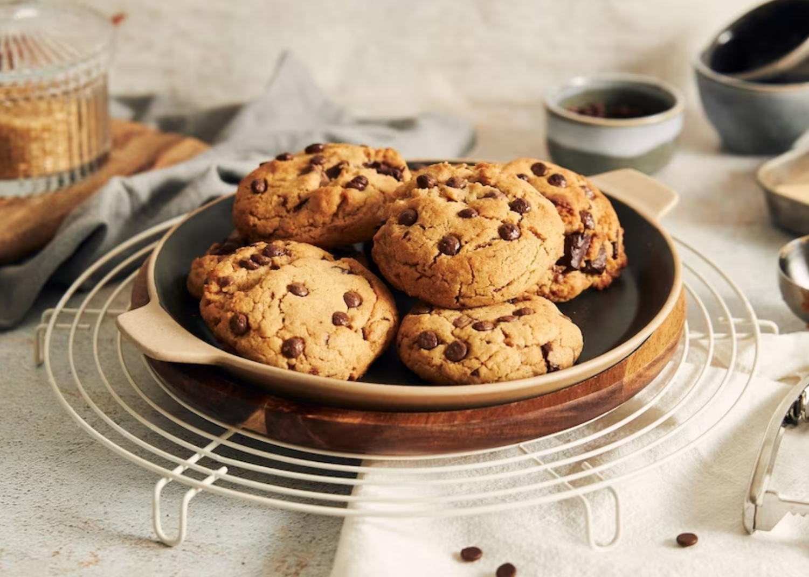
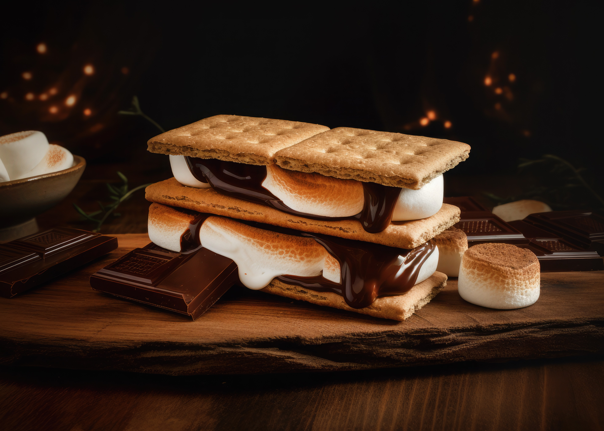

POSTRES

- Ingredientes

- 1/2taza (115 g) de mantequilla derretida
- 1 taza (200 g) de azúcar
- 2 huevos
- 1 cucharadita de extracto de vainilla
- 1/3 taza (40 g) de harina de trigo
- 1/4 de taza (30 g) de cacao en polvo sin azúcar
- 1/4 de cucharadita de sal
- 1/4 de cucharadita de polvo de hornear
- 1/2 taza (50 g) de nueces picadas (opcional)
- Tiempo

- Preparación: 10 minutos
- Cocción: 20-25 minutos
- Temperatura

- 175°C (350°F)
- Procedimiento

- Precalienta tu freidora de aire
- En un tazón grande, mezcla la mantequilla derretida y el azúcar hasta que estén bien combinados
- Agrega los huevos uno por uno, batiendo bien después de cada adición. Luego, agrega el extracto de vainilla y mezcla nuevamente
- En otro tazón, tamiza la harina, el cacao en polvo, la sal y el polvo de hornear. Incorpora gradualmente los ingredientes secos a la mezcla de mantequilla y azúcar, mezclando bien después de cada adición. Asegúrate de que no queden grumos
- Agrega las nueces picadas a la mezcla y remueve hasta que estén bien distribuidas
- Vierte la masa en un molde previamente engrasado
- Coloca el molde con la masa en la freidora de aire
- Hornea los brownies durante 20-25 minutos o hasta que al insertar un palillo en el centro, este salga con solo unas pocas migas húmedas (no líquidas)
- Una vez listos, retira los brownies y deja que se enfríen en el molde durante unos 10 minutos
- Después de enfriar un poco, corta los brownies en cuadrados o rectángulos y sírvelos

- Ingredientes
- 1/2 taza (115 g) de mantequilla a temperatura ambiente
- 1/2 taza (100 g) de azúcar granulada
- 1/4 de taza (50 g) de azúcar moreno
- 1 huevo
- 1 cucharadita de extracto de vainilla
- 1 y 1/2 tazas (190 g) de harina de trigo
- 1/2 cucharadita de bicarbonato de sodio
- 1/4 de cucharadita de sal
- 1/2 taza (85 g) de chispas de chocolate
- Tiempo
- Preparación: 15 minutos
- Cocción: 8-10 minutos por lote
- Temperatura
- 175°C (350°F)
- Procedimiento
- En un tazón grande, bate la mantequilla, el azúcar granulada y el azúcar moreno hasta obtener una mezcla suave y cremosa
- Agrega el huevo y el extracto de vainilla, y sigue batiendo hasta que estén bien combinados
- En otro tazón, mezcla la harina de trigo, el bicarbonato de sodio y la sal
- Agrega los ingredientes secos a la mezcla de mantequilla y azúcar, y mezcla hasta que se forme una masa uniforme
- Agrega las chispas de chocolate a la masa y mezcla para distribuirlas de manera uniforme
- Forma pequeñas bolas de masa del tamaño de una nuez y colócalas un molde previamente rociada con spray antiadherente para cocinar. Asegúrate de dejar suficiente espacio entre las galletas para que no se peguen mientras se cocinan
- Precalienta tu freidora de aire
- Hornea las galletas durante 8-10 minutos o hasta que estén doradas en los bordes
- Una vez listas, retira las galletas y déjalas enfriar en una rejilla
- Repite el proceso con el resto de la masa hasta que hayas horneado todas las galletas

- Ingredientes
- 8 galletas tipo graham (cuadradas)
- 4 malvaviscos grandes
- 4 cuadraditos de chocolate para hornear (aproximadamente 2x2 cm)
- Spray antiadherente para cocinar
- Tiempo
- Preparación: 5 minutos
- Cocción: 2-3 minutos
- Temperatura
- 200°C (390°F)
- Procedimiento
- Precalienta tu freidora de aire
- Corta cada malvavisco por la mitad, de manera horizontal, para que tengas 8 mitades en total
- Coloca 4 galletas tipo graham en el molde previamente rociada con spray antiadherente para cocinar
- Sobre cada galleta, coloca un cuadradito de chocolate y luego una mitad de malvavisco
- Coloca la canasta de la freidora de aire en su lugar y cierra la freidora
- Hornea los Smores en la freidora de aire durante 2-3 minutos o hasta que los malvaviscos estén dorados y se hayan ablandado
- Una vez listos, retira los Smores
- Coloca las otras 4 galletas tipo graham encima de los malvaviscos y presiona suavemente para armar los sandwiches